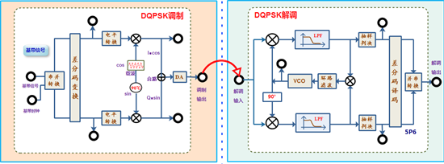

四、实验框图及功能说明
4.1 实验框图说明

图3.4.4.5 DQPSK调制解调流程图
框图说明：
本实验中需要用到以下3个功能模块：
(1).A2（基带信号产生与码型变换）：
模块完成基带信号产生功能。其中基带信号产生：从2P1输出基带信号，2P3输出基带时钟（时钟速率可以设置）；点击框图中“基带设置”按钮，可以修改基带信号输出的相关参数，实验时使用128K基带信号；
模块可以模拟噪声信道，信号从2P5输入，经加噪后，从2P6输出，通过模块右下角的编码器开关，可以调节噪声电平。
(2).A4（信道编码与频带调制模块）：
模块完成输入基带信号的DQPSK调制，基带信号和基带时钟分别从4P5和4P6输入，调制模块首先将基带信号进行串并转换，分为I,Q两路进行输出，然后完成4进制相对码到绝对码转换（差分编码），之后将I乘以同向载波Cos，Q乘以正交载波Sin，然后将两路信号相加得到调制信号，调制后信号从4P9输出，相加前的调制信号可以通过3档的开关切换输出。调制载波频率默认为1.024M，通过“载波频率”旋钮可修改，修改范围为0.896M-1.152M；
(3).A5（频带解调与纠错译码模块）：
模块对输入的DQPSK调制进行解调，解调采用相干解调法。其中载波提取采用了数字costas环电路，costas环VCO中心频率可自动锁定，可从5TP3观测本地载波；输入的调制信号和本地提取的同向（Cos）及正交（Sin）载波相乘，相乘后分别进行低通滤波，滤波后信号可以从5TP5和5TP7观测解调信号，也可用两个测量点使用示波器的XY模式观测星座图。之后将5TP5和5TP7的信号进行位同步提取及抽样判决，判决后信号从5P2和5TP2输出，最后将两路信号完成并串转换，从5P6输出。
4.2测量点说明
(1).基带产生与码型变换模块-A2
l 2P1：基带数据输出；
l 2P3：基带时钟输出；实验中一般选择128K时钟；
l 2P5：噪声信道输入端；
l 2P6：加噪后信号输出端，可通过编码器调节噪声电平；
(2).信道编码与频带调制模块-A4
l 4P5：调制数据输入；
l 4P6：调制数据时钟输入；
l 4P7：串并转换后I路基带数据；
l 4P8：串并转换后Q路基带数据；
l 4P9：DQPSK调制输出；
(3).纠错译码与频带解调模块-A5
l 5P1：解调信号输入；
l 5TP3：本地载波输出；
l 5TP5：I路判决前信号输出，可作为观测星座图的X轴；
l 5TP5：Q路判决前信号输出，可作为观测星座图的Y轴；
l 5P2：I路判决前信号输出；
l 5TP2：Q路判决前信号输出；
l 5P6：解调数据输出；
注：通过液晶选定实验内容后，模块对应的状态指示确定，这时不要按模块右下角编码开关，如果因按编码开关改变了工作状态，学生可以退出流程图后重新进入。
五、实验内容及实验步骤
5.1实验准备
(1).实验模块在位检查
在关闭系统电源的情况下，确认下列模块在位：
● 基带数据产生与码型变换模块-A2
● 信道编码与频带调制模块-A4
● 频带解调与纠错译码模块-A5
(2).加电
打开系统电源开关，模块右上角红色电源指示灯亮，几秒后模块左上角绿色运行指示灯开始闪烁，说明模块工作正常。若两个指示灯工作不正常，需关电查找原因。
(3).选择实验内容
使用鼠标在液晶上根据功能菜单选择：实验项目->原理实验->数字调制解调实验->DQPSK调制解调实验，进入到DQPSK调制解调实验页面。
(4).信号线连接
使用信号连接线按照实验框图中的，连线方式进行连接,并理解每个连线的含义。
5.2 A方式时DQPSK调制观测
(1).基带数据设置及时域观测
使用双踪示波器分别观察2P1和2P3，使用鼠标点击“基带设置”按钮，设置基带速率为“15-PN”“128K”，点击“设置”进行修改。观测基带数据的变化，理解并掌握基带数据设置的基本方法。
(2).基带数据串并转换后I、Q基带数据观测
用鼠标将调制方式选择框选择到“A”方式，模块会工作调制的A方式下；
用示波器分别观测串并转换后的I路基带数据4P7和Q路基带数据4P8，观测其速率，和2P1基带数据进行对比，分析其对应关系及速率变化情况。同时观测差分编码后4P7和4P8，计算差分编码计算是否正确。
基带数据完成串并转换后，根据调制的A，B方式会进行电平转换，由于硬件原因，实验中没有引出，可自行思考计算该值，具体转换关系参考实验原理部分A、B方式电平逻辑电平对应关系表。
(3).A方式时I，Q基带分别与载波相乘信号观测
实验中可通过3路切换开关使4P9分别输出I路调制输出，Q路调制输出和合路调制输出，即DQPSK调制输出。
将三路开关拨到上面，用示波器分别观I路基带数据4P7和I路调制输出4P9，分析其对应关系及相位情况。
将三路开关拨到下面，用示波器分别观Q路基带数据4P8和Q路调制输出4P9，分析其对应关系及相位情况。
(4).DQPSK调制信号时域观测
将三路开关拨到中间，用示波器通道1观测2P1，通道2观测DQPSK调制信号4TP9，分析DQPSK调制后，基带信号和载波相位对应关系；
(5).DQPSK调制信号频谱观测
采用频谱仪或示波器的FFT功能，观测分析PSK调制信号4TP9的频谱特性；
通过“载波频率”旋钮修改载波频率，观察频谱特性的变化。
修改基带信号时钟速率的设置，设置为64K，128K，观测调制信号的频谱变化。
和基带信号频谱结合，分析基带信号经DQPSK调制后，频谱的变化情况。分析DQPSK调制信号的带宽与基带信号速率、载波频率的关系。
注：结束该步骤时，调整“基带设置”为“15-PN”“128K”；“载波频率”f为1024K。
5.3 A方式DQPSK解调观测
(1).Costas环载波恢复输出观测
用示波器通道1观测基带时钟2TP3，作为同步通道；通道2观测costas环载波输出5TP3；系统采用数字锁相环，会自动跟踪发送端载波，同步状态时costas环载波频率约为1.024M；
注：正常情况下，需要同时观测调制端载波和costas环载波输出，由于调制端载波没有输出，因此选择和调制端载波同步的基带时钟作为同步源进行对比。
(2).判决前信号及对应星座图观测
用示波器分别观测I路判决前信号5TP5和Q路判决前信号5TP7，观察其时域特性，分析其是否正确。
将示波器调到“XY”模式，两个通道分别调节到“交流”模式，然后将双通道分别接5TP5与5TP7，通道幅度调节到星座图在屏幕上大小合适的状态，观测A方式DQPSK星座图。
(3).I，Q两路判决后信号观测
I路信号判决观测：用示波器通道1观测判决前信号5TP5，作为同步通道；通道2观测判决后信号5P2，观测分析判决后信号是否正确。
Q路信号判决观测：用示波器通道1观测判决前信号5TP7，作为同步通道；通道2观测判决后信号5TP2，观测判决前后信号是否正确。
一般情况下，判决电平为可调量，实验中为了方便，将判决电平设置为固定值，其值为判决前信号的中间电平。
(4).DQPSK解调及相位模糊观察
由于DQPSK有4种相位情况，解调时，解调端提取的同步载波有可能与4种相位中的任意一种实现同向。解调时如果本地载波和调制信号载波有相位差，则解调端会出现相位模糊情况，对应DQPSK的4种相位情况，只有1种情况可以正确解调，其他3种均会出现相位模糊情况（分别为I路反向，Q路反向，I和Q路信号交换），实验中我们用下面方法观测相位模糊的现象。
操作方法：由于相位模糊是有一定概率出现的，因此实验中通过多次插拔5P1上的调制信号，让costas环重新建立同步，有可能出现相位模糊的现象。
I路解调信号观测:用示波器通道1观测基带数据4P7，作为同步通道；用通道2观测I路判决后信号5P2，观测其解调输出是否相同或反向？否则，用通道2观测Q路判决后信号5TP2，分析其是否相同或反向。
用同样方法观测Q路解调信号，分析Q路调制前4P8和解调后5TP2在不同相位模糊情况下的现象。
用示波器同时观测2P1和5P6，对比调制前和解调后信号是否相同，分析DQPSK是否解决了相位模糊的问题；
使用上述方法，通过多次尝试，分别观测到3种相位模糊的现象，并对比5P6解调是否出错；
5.4 B方式DQPSK调制及解调观测
(1).将DQPSK调制模式选择到B方式
用鼠标将调制方式选择框选择到“B”方式，模块会工作调制的B方式下；
在DQPSK调制B方式下，其他实验操作内容与A方式相同，完成B方式下调制解调的实验内容观测。
5.5 DQPSK系统加噪及性能分析
(1).DQPSK系统加噪设置
在前面实验步骤中，直接将调制输出4P9连接到了解调输入端5P1，没有经过模拟信道。为测试DQPSK解调性能，下面为调制信号添加噪声后再解调。将4P9调制信号连接到2P5，加噪后信号2P6连接到调制输入端5P1。可以通过A2模块右下角编码器调节噪声电平（右旋增大）；
为了便于同时对比，该过程每个实验步骤下，分别将调制方式切换到“Ａ”和“Ｂ”完成观测。
(2).DQPSK加噪后信号观测
用示波器观测加噪前信号4P9和加噪后信号2P6，逐渐调节噪声电平，观测加噪前和加噪后信号的变化；
(3).DQPSK加噪后解调及星座图观测
用示波器通道1观测I路基带信号2P7，作为同步通道；另一个通道观测I路判决前信号5TP5。逐渐增大噪声电平，分析判决2P2信号是否受噪声影响，在什么情况下会出现判决误码，并结合判决后信号2P2对比。用同样方法观测Q路信号判决受噪声影响。
将示波器调到“XY”模式，两个通道分别调节到“交流”模式，然后将双通道分别接5TP5与5TP7，观测DQPSK解调端星座图，逐渐调节噪声电平，观察星座图变化，分析其在什么情况下会出现判决误码。
(4).DQPSK解调端载波不同步情况下星座图观测
在星座图观测模式下，通过“载波频率”按钮，调节调制端载波频率，使得解调端无法跟踪调制端载波，此时会出现载波不同步的情况，此时观测解调端星座图变化情况。
5.6 实验结束
实验结束，关闭电源，拆除信号连线，并按要求放置好实验附件和实验模块。